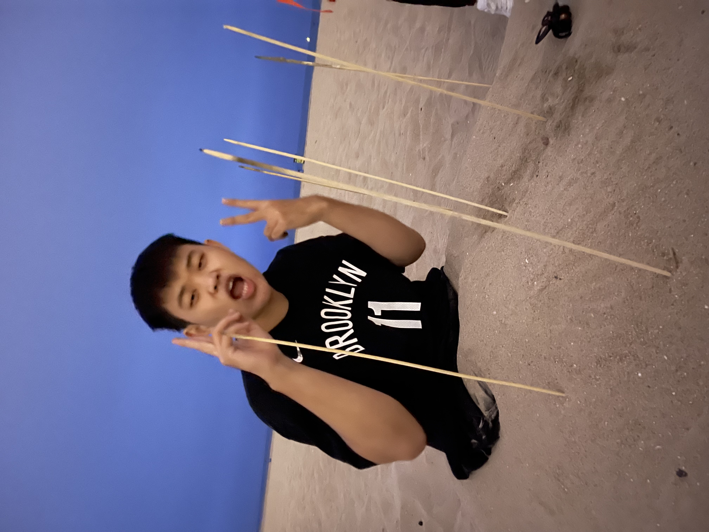

Michael Wang is a dedicated and enthusiastic computer engineering and computer science student at the University of Southern California.
With a passion for technology and innovation, Michael is eager to make an impact in his field. Michael has an improving background in
programming, mathematics, and electronics, which will serve as a solid foundation for his studies at USC.

Harry Wang is a highly motivated and driven computer science and business administration freshman at the University of Southern
California. Harry is passionate about utilizing his technical and business skills to drive innovation and create impactful
solutions. With a growing background in computer science and a keen interest in the business world, Harry is eager to make
the most of his college experience and develop a diverse skill set.

Bill Ouyang is a driven and enthusiastic mechanical engineering freshman at the University of Southern California.
With a passion for innovation and problem-solving, Bill is eager to make an impact in the field of mechanical engineering.
Bill has a strong background in mathematics, physics, and computer-aided design, which will serve as a solid foundation for
his studies at USC. Bill is determined to make the most of his college journey and contribute to the advancement of
mechanical engineering. With a drive to learn, grow, and succeed, Bill is poised to make a positive impact in his field.